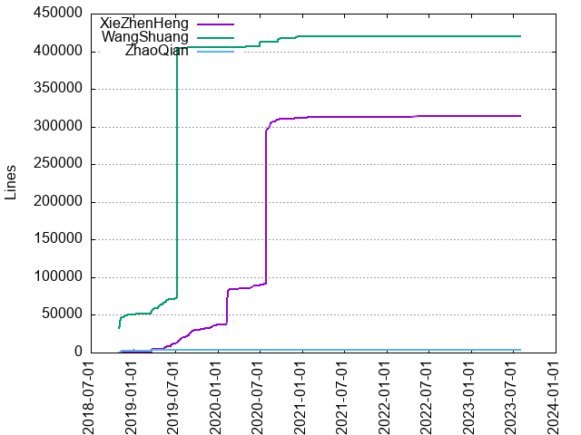

Authors
| Author | Commits (%) | + lines | - lines | First commit | Last commit | Age | Active days | # by commits |
|---|
| XieZhenHeng | 858 (56.26%) | 313717 | 277041 | 2019-03-14 | 2023-08-03 | 1602 days, 22:52:07 | 280 | 1 |
| WangShuang | 636 (41.70%) | 419399 | 71145 | 2018-10-25 | 2021-12-03 | 1134 days, 20:52:19 | 155 | 2 |
| ZhaoQian | 31 (2.03%) | 3278 | 878 | 2018-10-29 | 2019-03-21 | 142 days, 20:00:53 | 14 | 3 |


| Month | Author | Commits (%) | Next top 5 | Number of authors |
|---|
| 2023-08 | XieZhenHeng | 1 (100.00% of 1) | | 1 |
| 2023-06 | XieZhenHeng | 1 (100.00% of 1) | | 1 |
| 2023-04 | XieZhenHeng | 1 (100.00% of 1) | | 1 |
| 2022-08 | XieZhenHeng | 1 (100.00% of 1) | | 1 |
| 2022-07 | XieZhenHeng | 1 (100.00% of 1) | | 1 |
| 2022-06 | XieZhenHeng | 1 (100.00% of 1) | | 1 |
| 2022-05 | XieZhenHeng | 1 (100.00% of 1) | | 1 |
| 2022-04 | XieZhenHeng | 4 (100.00% of 4) | | 1 |
| 2021-12 | XieZhenHeng | 3 (75.00% of 4) | WangShuang | 2 |
| 2021-11 | XieZhenHeng | 4 (100.00% of 4) | | 1 |
| 2021-10 | XieZhenHeng | 2 (100.00% of 2) | | 1 |
| 2021-08 | XieZhenHeng | 3 (100.00% of 3) | | 1 |
| 2021-04 | XieZhenHeng | 2 (100.00% of 2) | | 1 |
| 2021-03 | XieZhenHeng | 4 (100.00% of 4) | | 1 |
| 2021-02 | XieZhenHeng | 2 (100.00% of 2) | | 1 |
| 2021-01 | XieZhenHeng | 3 (100.00% of 3) | | 1 |
| 2020-12 | XieZhenHeng | 6 (54.55% of 11) | WangShuang | 2 |
| 2020-11 | WangShuang | 9 (52.94% of 17) | XieZhenHeng | 2 |
| 2020-10 | XieZhenHeng | 6 (60.00% of 10) | WangShuang | 2 |
| 2020-09 | XieZhenHeng | 53 (68.83% of 77) | WangShuang | 2 |
| 2020-08 | XieZhenHeng | 20 (66.67% of 30) | WangShuang | 2 |
| 2020-07 | XieZhenHeng | 27 (75.00% of 36) | WangShuang | 2 |
| 2020-06 | WangShuang | 6 (66.67% of 9) | XieZhenHeng | 2 |
| 2020-05 | XieZhenHeng | 7 (70.00% of 10) | WangShuang | 2 |
| 2020-04 | XieZhenHeng | 6 (66.67% of 9) | WangShuang | 2 |
| 2020-03 | XieZhenHeng | 16 (100.00% of 16) | | 1 |
| 2020-02 | XieZhenHeng | 34 (100.00% of 34) | | 1 |
| 2020-01 | XieZhenHeng | 34 (100.00% of 34) | | 1 |
| 2019-12 | XieZhenHeng | 85 (98.84% of 86) | WangShuang | 2 |
| 2019-11 | XieZhenHeng | 56 (88.89% of 63) | WangShuang | 2 |
| 2019-10 | XieZhenHeng | 81 (97.59% of 83) | WangShuang | 2 |
| 2019-09 | XieZhenHeng | 72 (78.26% of 92) | WangShuang | 2 |
| 2019-08 | XieZhenHeng | 54 (81.82% of 66) | WangShuang | 2 |
| 2019-07 | XieZhenHeng | 83 (72.17% of 115) | WangShuang | 2 |
| 2019-06 | XieZhenHeng | 92 (61.33% of 150) | WangShuang | 2 |
| 2019-05 | WangShuang | 100 (74.07% of 135) | XieZhenHeng | 2 |
| 2019-04 | WangShuang | 71 (100.00% of 71) | | 1 |
| 2019-03 | WangShuang | 128 (67.72% of 189) | XieZhenHeng, ZhaoQian | 3 |
| 2019-02 | WangShuang | 1 (100.00% of 1) | | 1 |
| 2019-01 | WangShuang | 7 (100.00% of 7) | | 1 |
| 2018-12 | WangShuang | 26 (100.00% of 26) | | 1 |
| 2018-11 | WangShuang | 77 (83.70% of 92) | ZhaoQian | 2 |
| 2018-10 | WangShuang | 20 (95.24% of 21) | ZhaoQian | 2 |
| Year | Author | Commits (%) | Next top 5 | Number of authors |
|---|
| 2023 | XieZhenHeng | 3 (100.00% of 3) | | 1 |
| 2022 | XieZhenHeng | 8 (100.00% of 8) | | 1 |
| 2021 | XieZhenHeng | 23 (95.83% of 24) | WangShuang | 2 |
| 2020 | XieZhenHeng | 220 (75.09% of 293) | WangShuang | 2 |
| 2019 | XieZhenHeng | 604 (57.09% of 1058) | WangShuang, ZhaoQian | 3 |
| 2018 | WangShuang | 123 (88.49% of 139) | ZhaoQian | 2 |